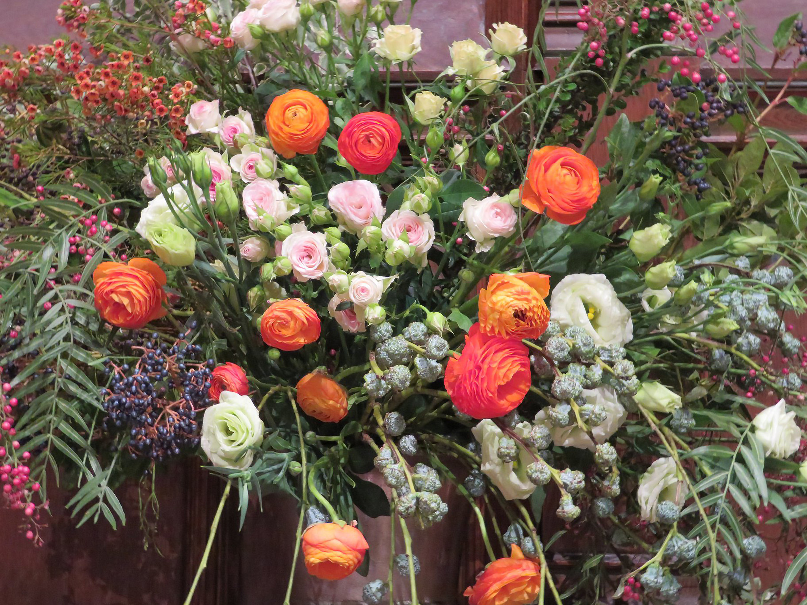

Give
Whether you choose to volunteer your time or send a donation, we really appreciate your support of our mission to share beauty with the church.
Flower Dedications
You can dedicate a high altar arrangement for a week of your choosing in honor or memory of a loved one or special occasion. Suggested donation is $200.
Access the Flower Dedication form here.
Volunteer
We are always happy to welcome in new members, regardless of your skill level or experience!
Volunteer opportunities include working on arrangements, decorating, clean-up, flower conditioning, and leadership.
To learn more about volunteer opportunities, please contact our New Member Coordinator, Christa Albrecht at christa@cccflowerguild.org.